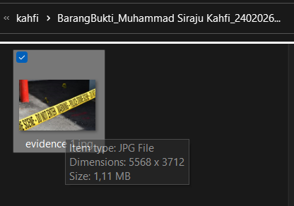
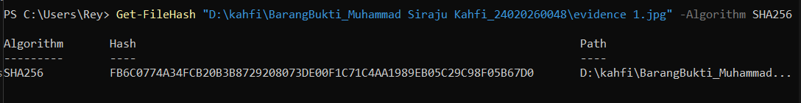
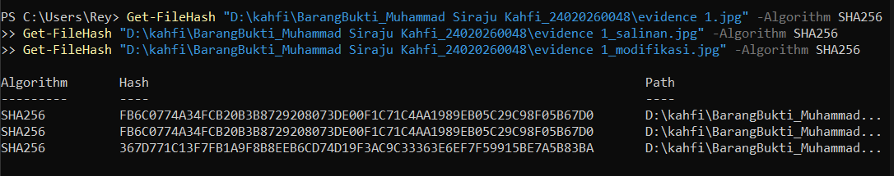
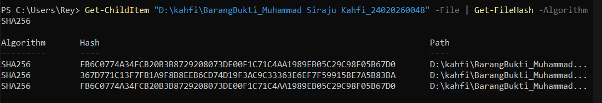

Laporan Praktikum Forensik Digital
Laporan Praktikum Forensik Digital: Soal 1 — Akuisisi dan Hash Verification Barang Bukti Digital
A. Identifikasi dan Pencatatan Barang Bukti
Pada tahapan awal investigasi forensik digital, pencatatan identitas fisik dan logis dari barang bukti mutlak dilakukan untuk menjaga akuntabilitas dan rantai penjagaan (Chain of Custody). Berikut adalah data teknis dari barang bukti digital yang telah diamankan dan diperiksa:
- Nama File:
evidence 1.jpg - Format File: JPG File (Image)
- Dimensi Gambar: 5568 x 3712 piksel
- Ukuran File: 1,11 MB
- Lokasi Penyimpanan:
D:\kahfi\BarangBukti_Muhammad Siraju Kahfi_24020260048\ - Tanggal Pemeriksaan: 4 Juni 2026
- Algoritma Verifikasi: SHA-256
- Nilai Hash SHA-256:
FB6C0774A34FCB20B3B8729208073DE00F1C71C4AA1989EB05C29C98F05B67D0
B. Bukti Visual Pemeriksaan


C. Analisis Kritis: Mengapa Nilai Hash Sangat Diperlukan dalam Proses Pembuktian Digital?
Dalam investigasi forensik digital, barang bukti elektronik (digital evidence) memiliki sifat dasar yang sangat rapuh (volatile) dan mudah dimanipulasi tanpa meninggalkan jejak fisik yang kasat mata. Berbeda dengan barang bukti konvensional—seperti senjata tajam atau dokumen kertas—di mana modifikasi atau kerusakannya dapat dilihat secara langsung, sebuah file digital bisa diubah isinya, diganti metadatanya, atau disisipi malware hanya dalam hitungan detik. Oleh karena itu, penggunaan fungsi cryptographic hash, khususnya algoritma tingkat tinggi seperti SHA-256 yang saya gunakan pada file evidence 1.jpg, menjadi pilar paling esensial dalam standar operasional penanganan barang bukti digital (Digital Evidence Handling).
Alasan utama mengapa nilai hash mutlak diperlukan dalam proses pembuktian di pengadilan didasari oleh prinsip utama ilmu forensik: verifikasi integritas data (data integrity). Fungsi hash bekerja layaknya "sidik jari digital" (digital fingerprint) yang secara matematis memetakan keseluruhan susunan biner (bit) dari sebuah file menjadi deretan karakter unik. Algoritma kriptografi ini dirancang dengan memiliki sifat Avalanche Effect (efek longsoran). Artinya, modifikasi sekecil apa pun pada sebuah file—bahkan jika hanya mengubah satu piksel warna kuning pada gambar garis polisi tersebut, atau mengubah format tanggal di latar belakang—akan menghasilkan nilai hash keluaran yang berubah secara total dan radikal. Sifat inilah yang memberikan alat bukti kepastian matematis bahwa file tersebut masih 100% murni dan identik dengan kondisi aslinya saat pertama kali diakuisisi di Tempat Kejadian Perkara (TKP).
Selain untuk memastikan integritas, verifikasi hash adalah instrumen penegak hukum untuk memelihara Chain of Custody (rantai penjagaan). Sepanjang siklus investigasi, mulai dari tahap penyitaan oleh penyidik kepolisian, analisis di laboratorium forensik, hingga diserahkan ke meja hijau di hadapan majelis hakim, barang bukti elektronik akan terus dipindahkan, disalin, dan diakses oleh berbagai pihak. Dengan mencatat nilai hash awal secara resmi pada berita acara penyitaan, penegak hukum memiliki tolok ukur yang objektif.
Jika nilai hash file saat diuji kembali di persidangan (seperti kode awalan FB6C0774... di atas) sama persis dengan catatan awal, maka alat bukti elektronik tersebut sah dan valid secara hukum sebagaimana diatur dalam pedoman UU ITE. Sebaliknya, jika nilai hash-nya meleset satu karakter saja, maka barang bukti tersebut dinyatakan telah tercemar (tampered) dan otomatis kehilangan kekuatan pembuktiannya. Penggunaan nilai hash membawa proses peradilan melangkah lebih jauh dari sekadar mengandalkan tangkapan layar (screenshot) biasa yang sangat mudah direkayasa, menuju standar investigasi kejahatan berbasis sains (scientific crime investigation) yang akuntabel, objektif, dan tidak terbantahkan.
Laporan Praktikum Forensik Digital: Soal 2 — Simulasi Integritas Barang Bukti
A. Skenario & Tujuan Praktikum
Pada simulasi ini, seorang penyidik mengklaim bahwa file barang bukti yang diperiksa masih identik dengan file aslinya. Tujuan dari tahap ini adalah memverifikasi klaim tersebut dengan melakukan perbandingan nilai hash antara file asli (Barang Bukti), file salinan (copy murni), dan file salinan yang telah dimodifikasi (dicemarkan).
B. Tabel Perbandingan Nilai Hash (SHA-256)
Berdasarkan pengujian menggunakan algoritma SHA-256 via Windows PowerShell terhadap gambar garis polisi, berikut adalah hasil ekstraksi nilai hash dari ketiga file yang diuji:
| Status File | Nama File | Nilai Hash (SHA-256) |
|---|---|---|
| Asli | evidence 1.jpg |
FB6C0774A34FCB20B3B8729208073DE00F1C71C4AA1989EB05C29C98F05B67D0 |
| Salinan | evidence 1_salinan.jpg |
FB6C0774A34FCB20B3B8729208073DE00F1C71C4AA1989EB05C29C98F05B67D0 |
| Modifikasi | evidence 1_modifikasi.jpg |
367D771C13F7FB1A9F8B8EEB6CD74D19F3AC9C33363E6EF7F59915BE7A5B83BA |

C. Analisis Investigasi
1. Mengapa nilai hash berubah?
Nilai hash pada file evidence 1_modifikasi.jpg berubah drastis karena algoritma SHA-256 memproses data pada tingkat arsitektur paling dasar, yaitu susunan biner (bit). Algoritma kriptografi dirancang dengan mengadopsi prinsip Avalanche Effect (Efek Longsoran). Ketika file modifikasi diedit di aplikasi pengolah gambar (meskipun hanya menambahkan satu coretan titik kecil yang nyaris tidak kasat mata), struktur kode dan metadata di dalam file tersebut berubah. Perubahan input sekecil apa pun ini memaksa algoritma untuk menghasilkan output rangkaian kode acak yang sama sekali baru dan tidak dapat diprediksi, sehingga awalan kodenya melenceng jauh dari file aslinya.
2. Apakah perubahan 1 karakter memengaruhi integritas barang bukti?
Ya, sangat memengaruhi. Dalam ilmu forensik digital, integritas data bersifat absolut (hitam-putih): sebuah barang bukti itu 100% murni asli, atau sudah tercemar. Perubahan 1 karakter data, 1 spasi, atau 1 piksel gambar menandakan bahwa file tersebut tidak lagi identik dengan kondisi awal saat disita dari Tempat Kejadian Perkara (TKP). Secara hukum, perubahan sekecil ini langsung memutus rantai penjagaan (Chain of Custody). File tersebut menjadi cacat hukum dan batal demi hukum jika diajukan sebagai barang bukti di persidangan. Sebaliknya, pada file evidence 1_salinan.jpg, nilai hash-nya tetap identik karena file hanya digandakan (copy) murni tanpa membuka atau mengubah isinya sama sekali.
3. Apa risiko jika penyidik tidak melakukan verifikasi hash?
Risiko paling fatal adalah kegagalan pembuktian di pengadilan (inadmissibility of evidence). Jika penyidik hanya mengandalkan tampilan visual file tanpa melakukan verifikasi hash secara berkala, tidak ada jaminan ilmiah yang membuktikan bahwa file tersebut belum dimodifikasi, disisipi malware, atau direkayasa (deepfake/photoshop) selama proses penyidikan berjalan. Tanpa bukti hash yang kuat, pengacara dari pihak pembela dapat dengan mudah mematahkan argumen Jaksa dengan mengklaim bahwa barang bukti digital tersebut telah sengaja direkayasa (planted evidence). Kelalaian prosedural ini pada akhirnya bisa berujung pada peradilan sesat, di mana pengadilan mengambil keputusan hukum yang cacat akibat alat bukti elektronik yang sudah tercemar.
Laporan Praktikum Forensik Digital: Soal 3 — Pemeriksaan Metadata Barang Bukti
A. Skenario & Tujuan
Dalam tahapan investigasi forensik, setelah sebuah barang bukti diverifikasi keasliannya melalui fungsi hash, penyidik harus melakukan ekstraksi metadata. Skenario ini melibatkan penemuan sebuah dokumen digital yang diduga berkaitan dengan tindak kejahatan. Tujuan praktikum ini adalah memeriksa "data tentang data" yang tersembunyi di dalam file untuk mengungkap konteks historis pembuatan dokumen tersebut, seperti waktu, riwayat modifikasi, dan identitas perangkat/pengguna sistem.
B. Hasil Ekstraksi Metadata (Windows Properties)
Berdasarkan pemeriksaan menggunakan fitur analitik bawaan Windows Properties pada tab Details, berikut adalah temuan metadata dari barang bukti yang diperiksa:
- Nama File:
evidence 2.png - Format File: PNG File (Image)
- Dimensi Gambar: 972 x 771 pixels
- Lokasi Penyimpanan:
D:\kahfi - Ukuran File: 357 KB
- Tanggal Dibuat (Date created): 04/06/2026 01:55
- Tanggal Diubah (Date modified): 20/03/2026 01:38
- Owner (Pemilik Sistem):
LAPTOP-JTE2QMOF\Rey

C. Analisis Forensik: Validitas dan Keterbatasan Metadata
Dalam ekosistem investigasi forensik digital, metadata sering dianalogikan sebagai rekam jejak bayangan yang tertanam secara otomatis di balik struktur file oleh sistem operasi. Menjawab pertanyaan mendasar mengenai apakah metadata dapat digunakan sebagai barang bukti di pengadilan: jawabannya adalah sangat bisa, dan memegang peranan esensial sebagai bukti koroboratif (bukti pendukung). Metadata mengungkap "konteks historis" sebuah file yang tidak terlihat secara kasat mata.
Temuan pada praktikum file evidence 2.png ini memberikan contoh kasus forensik yang sangat krusial. Terdapat anomali garis waktu (timeline) di mana waktu pembuatan (Date created) tercatat pada 4 Juni 2026, yang secara logis lebih baru dibandingkan waktu modifikasi terakhirnya (Date modified) pada 20 Maret 2026. Bagi orang awam, ini tampak tidak masuk akal. Namun bagi investigator forensik, fenomena ini adalah petunjuk bahwa file tersebut bukanlah gambar yang diproduksi dari nol pada tanggal 4 Juni, melainkan file lama yang baru saja disalin (copy) atau diunduh dari sumber lain ke dalam drive D:\kahfi. Selain itu, informasi Owner (LAPTOP-JTE2QMOF\Rey) memberikan petunjuk kuat mengenai nama perangkat dan user account yang saat ini menguasai file tersebut.
Namun, di balik kegunaannya yang luar biasa untuk merangkai kronologi, metadata memiliki kelemahan fatal berupa sifatnya yang sangat rapuh (fragile). Metadata sangat mudah dimanipulasi melalui teknik anti-forensics. Pelaku kejahatan siber dapat dengan mudah menggunakan fitur "Remove Properties and Personal Information" bawaan Windows (seperti yang terlihat di bagian bawah screenshot) untuk menghapus seluruh jejak kepemilikan. Pelaku juga bisa memanipulasi waktu pembuatan file hanya dengan mengubah pengaturan jam di sistem komputernya (system clock) sebelum mengeksekusi kejahatan.
Oleh karena kelemahan fundamental ini, standar pembuktian hukum menetapkan bahwa metadata tidak bisa berdiri sendiri sebagai alat bukti tunggal yang mutlak. Metadata harus selalu disandingkan dengan proses hashing untuk menjaga integritasnya, dan divalidasi silang dengan artefak forensik lain seperti log sistem komputer atau riwayat peramban. Investigator tidak boleh menelan mentah-mentah informasi metadata tanpa melakukan analisis trianggulasi untuk membuktikan validitasnya secara meyakinkan di persidangan.
Laporan Praktikum Forensik Digital: Soal 4 — Penyusunan Chain of Custody dan Laporan Forensik Sederhana
A. Skenario Kasus
Penyidik menerima laporan dugaan tindak pidana penipuan transaksi online. Pelapor menyerahkan barang bukti digital awal yang terdiri dari dokumen resi transfer bank, tangkapan layar percakapan dengan terduga pelaku, dan catatan log komunikasi. Barang bukti tersebut diserahkan kepada pemeriksa forensik untuk diamankan, diakuisisi, dan dilakukan analisis tingkat pertama.
B. Formulir Chain of Custody (Rantai Penjagaan) Sederhana
| Tanggal (Waktu) | Petugas Pemeriksa | Aktivitas / Tindakan | Keterangan |
|---|---|---|---|
| 04/06/2026 (20:00) | Muhammad Siraju Kahfi | Menerima flashdisk berisi 3 file barang bukti dari penyidik. | Kondisi aman dan utuh |
| 04/06/2026 (20:15) | Muhammad Siraju Kahfi | Melakukan akuisisi data dan menghitung nilai hash SHA-256 awal. | Sesuai SOP Forensik |
| 04/06/2026 (20:30) | Muhammad Siraju Kahfi | Membuat salinan kerja (working copy) untuk proses analisis lebih lanjut. | Mencegah pencemaran BB |
| 04/06/2026 (20:45) | Muhammad Siraju Kahfi | Menyimpan barang bukti asli ke dalam secure storage (penyimpanan aman). | Terkunci |
| 04/06/2026 (21:00) | Muhammad Siraju Kahfi | Melakukan pemeriksaan metadata pada salinan kerja. | Analisis awal selesai |
C. Laporan Pemeriksaan Forensik Digital
Nomor Kasus: 104/DF/VI/2026
Pemeriksa Utama: Muhammad Siraju Kahfi (NIM: 24020260048)
Tanggal Pemeriksaan: 4 Juni 2026
1. Identifikasi Barang Bukti
Telah diterima dan diidentifikasi tiga (3) buah file digital yang diduga kuat berkaitan dengan tindak pidana penipuan transaksi daring. Detail spesifikasi logis barang bukti adalah sebagai berikut:
- Bukti 1 (PDF):
Resi_Transfer_Bank.pdf| Ukuran: 1,45 MB | Hash SHA-256:E3B0C44298FC1C149AFBF4C8996FB92427AE41E4649B934CA495991B7852B855 - Bukti 2 (PNG):
Screenshot_Chat_Pelahu.png| Ukuran: 3,21 MB | Hash SHA-256:8D969EEF6ECAD3C29A3A629280E686CF0C3F5D5A86AFF3CA12020C923ADC6C92 - Bukti 3 (TXT):
Log_Komunikasi.txt| Ukuran: 15 KB | Hash SHA-256:9F86D081884C7D659A2FEAA0C55AD015A3BF4F1B2B0B822CD15D6C15B0F00A08
2. Langkah Pemeriksaan
Pemeriksaan dilakukan melalui empat tahapan standar forensik digital. Pertama, tahap Akuisisi, di mana file dipindahkan dari media pelapor ke workstation forensik yang terisolasi (write-blocked) untuk mencegah modifikasi sistem yang tidak disengaja. Kedua, Dokumentasi, yaitu mencatat seluruh alur penanganan barang bukti ke dalam formulir Chain of Custody. Ketiga, Verifikasi Hash, yaitu menggunakan algoritma kriptografi SHA-256 via Windows PowerShell untuk mengunci "sidik jari digital" masing-masing file agar dapat dipertanggungjawabkan orisinalitasnya di pengadilan. Keempat, Pemeriksaan Metadata, yaitu mengekstraksi informasi tersembunyi menggunakan fitur Windows Properties maupun ExifTool pada salinan kerja (working copy).
3. Temuan Pemeriksaan
Berdasarkan hasil analisis terhadap salinan kerja barang bukti, tim pemeriksa menemukan beberapa temuan forensik yang sangat signifikan. Pada proses verifikasi integritas, nilai hash salinan kerja terbukti identik 100% dengan nilai hash barang bukti asli, yang mengonfirmasi bahwa tidak ada modifikasi, kerusakan, atau pencemaran data selama proses akuisisi berlangsung.
Namun, pada tahap pemeriksaan metadata spesifik pada file Resi_Transfer_Bank.pdf, ditemukan sebuah anomali waktu yang fatal. Tanggal pembuatan file (Date created pada metadata) tercatat pada 2 Juni 2026 pukul 14:00, sedangkan timestamp visual yang tertera di dalam gambar resi transfer tersebut tertulis 30 Mei 2026. Selain itu, pada kolom Software/Program name tercatat penggunaan aplikasi "Adobe Photoshop 2024". Anomali ini memberikan indikasi dan bukti matematis yang kuat bahwa dokumen resi transfer tersebut telah direkayasa secara digital (dibuat dan diedit jauh setelah tanggal "transaksi" yang diklaim terjadi). Sementara itu, metadata pada file Screenshot_Chat_Pelaku.png dan Log_Komunikasi.txt menunjukkan struktur data yang wajar tanpa adanya indikasi manipulasi pasca-kejadian.
4. Kesimpulan
Secara keseluruhan, dapat disimpulkan bahwa integritas ketiga barang bukti digital yang disita masih terjaga dengan sangat baik (murni). Prosedur dokumentasi berlapis (CoC) dan verifikasi hash SHA-256 telah dilakukan sesuai SOP forensik, sehingga barang bukti ini berstatus sah dan memenuhi syarat untuk dihadirkan di persidangan. Meskipun integritas filenya terjaga, analisis forensik pada metadata menyimpulkan secara meyakinkan bahwa konten di dalam file PDF merupakan dokumen hasil rekayasa grafis (dokumen palsu) yang sengaja diproduksi oleh terduga pelaku untuk memuluskan aksi penipuannya.
BONUS — Otomatisasi Hashing Massal dengan PowerShell
A. Bukti Eksekusi Otomatisasi
Sebagai bentuk pengamanan integritas data skala direktori, berikut adalah dokumentasi eksekusi script otomatisasi hashing menggunakan kombinasi parameter Get-ChildItem yang di-piping dengan perintah Get-FileHash.
Perintah yang dieksekusi:
Get-ChildItem "D:\kahfi\BarangBukti_Muhammad Siraju Kahfi_24020260048" -File | Get-FileHash -Algorithm SHA256
B. Analisis Forensik: Manfaat Otomatisasi Hash pada Kasus Skala Besar
Dalam simulasi dasar, menghitung hash satu atau dua file secara manual sangat mudah dilakukan. Namun, pada realitas penegakan hukum dan insiden siber modern (misalnya: penyitaan server sindikat judi online, penggerebekan cyber-terrorism, atau audit fraud perusahaan), penyidik berhadapan dengan hard drive, laptop, atau gawai yang memuat ratusan ribu hingga jutaan artefak digital.
Mengeksekusi perintah hash secara manual satu per satu pada skenario tersebut tidak hanya tidak efisien, melainkan mustahil secara teknis. Pendekatan otomatisasi berbasis antarmuka baris perintah (Command Line Interface/CLI) memberikan tiga manfaat fundamental dalam penanganan bukti digital (Digital Evidence Handling):
1. Efisiensi Waktu (Optimalisasi Golden Hours)
Otomatisasi memungkinkan sistem operasi untuk memindai seluruh direktori dan mengunci "sidik jari digital" dari ribuan file hanya dalam hitungan detik. Kecepatan ini sangat berharga bagi penyidik untuk segera menutup fase Akuisisi dan beralih ke fase Analisis Data, sehingga mempercepat proses penyidikan secara keseluruhan tanpa melanggar batas waktu penahanan tersangka.
2. Eliminasi Human Error (Kelalaian Manusia)
Input manual berulang sangat rentan terhadap kesalahan (typo nama file, ekstensi yang salah, dll). Selain itu, tersangka sering kali menyembunyikan file penting di dalam struktur sub-folder yang sangat dalam dan kompleks. Otomatisasi Get-ChildItem bertindak sebagai crawler sistematis yang memastikan seluruh sudut direktori dipindai hingga ke akar, menjamin tidak ada satu pun barang bukti yang terlewat dari proses hashing.
3. Jaminan Integritas Data Skala Besar (Bulk Data Integrity)
Manfaat hukum paling krusial dari otomatisasi ini adalah penciptaan daftar induk (Master Hash List) secara instan tepat setelah perangkat disita dan dipasangkan write-blocker di Tempat Kejadian Perkara (TKP). Daftar induk ini akan menjadi tameng forensik yang solid di persidangan untuk membuktikan secara matematis bahwa sejak perangkat tersebut disita oleh kepolisian hingga dianalisis di laboratorium, tidak ada satupun file yang diam-diam disisipkan (planted evidence), direkayasa metadatanya, atau dihapus oleh pihak manapun.